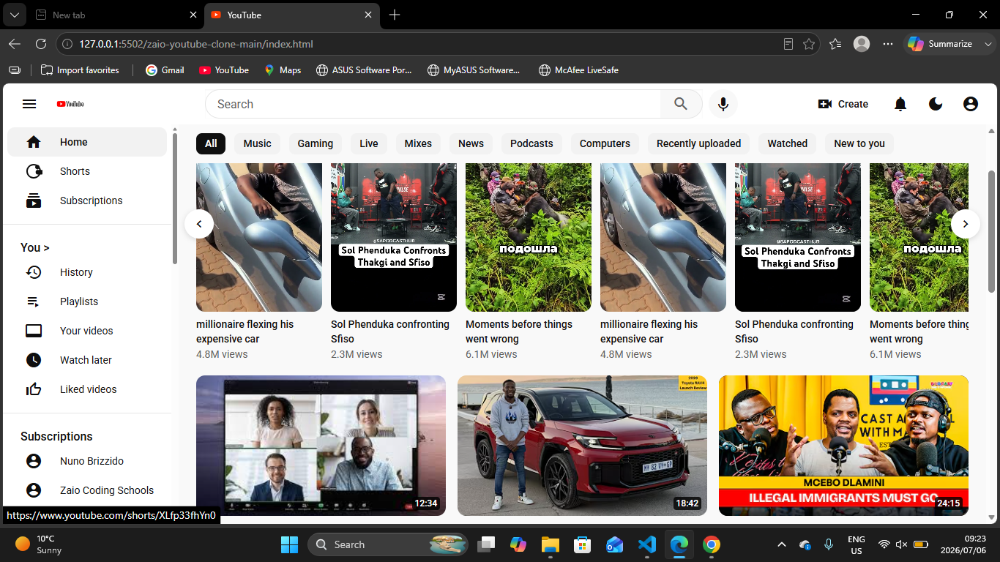

📌 Project Overview
This project is a YouTube-inspired UI clone built using HTML and CSS. The objective was to recreate the familiar YouTube interface while improving my frontend development skills through responsive layouts, reusable components, and clean visual design.
🎯 Problem Statement
Modern video streaming platforms like YouTube feature complex layouts with navigation menus, responsive video grids, search functionality, and channel information. The challenge was to recreate this interface using only HTML and CSS while maintaining responsiveness across different screen sizes.
🧠 My Role
I worked as the frontend developer responsible for designing the page layout, building reusable video card components, styling the navigation interface, and ensuring the application remained responsive on desktop and mobile devices.
⚙️ Process
- Analysed the YouTube interface and layout structure
- Built the responsive navigation bar and sidebar
- Created reusable video thumbnail cards
- Designed a responsive video grid using CSS Grid
- Optimised spacing, typography, and layout for multiple screen sizes
🖼️ UI Preview

💻 Implementation
Semantic HTML was used to organise the page structure, while CSS Grid created the responsive video gallery. Flexbox handled navigation alignment, sidebar layout, and component positioning. Particular attention was given to spacing, typography, and consistency to closely resemble the original YouTube interface.
🧪 Challenges
One of the biggest challenges was creating a responsive video grid that adapted smoothly across different screen sizes while keeping consistent spacing and alignment. This was achieved using CSS Grid with flexible columns and responsive media queries.
🚀 Outcome
The final result is a clean, responsive YouTube-inspired interface that demonstrates my understanding of modern frontend layout techniques, responsive web design, and recreating real-world user interfaces using only HTML and CSS.
📚 Key Learnings
- Responsive CSS Grid layouts
- Advanced Flexbox positioning
- Component-based UI design
- Improved responsive web design skills
- Recreating production-level user interfaces